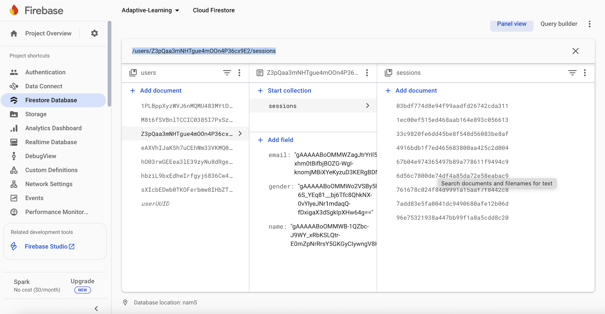
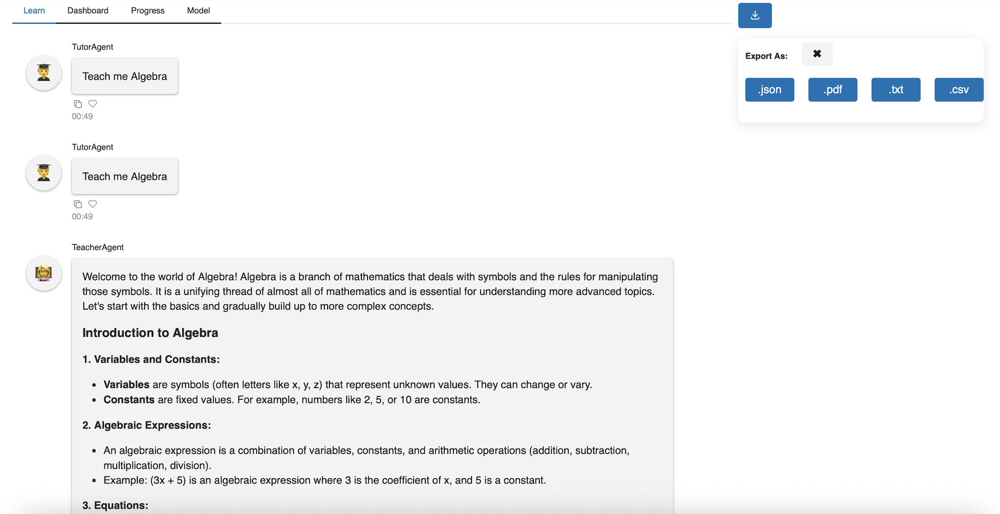

Project Overview
Adaptive Learning is a web-based application that personalizes study paths by tracking session data,
restoring prior progress, and adjusting difficulty.
My Tasks:
1) Keep track of the student's autogen progress which includes improvising JSON structure and store it in
firebase based on the user UID.
2) Implement session restore functionality so that the users can resume from where they left off.
3) Enforce security rules to ensure data privacy between users.
4) Finally, add a user-facing export feature to download chat history in multiple formats (JSON, CSV, TXT, PDF).
For detialed sprint info follow the link ( View detailed Sprint breakdown →)
Screenshots


Pull Requests: GitHub PR's
Commits: My commits